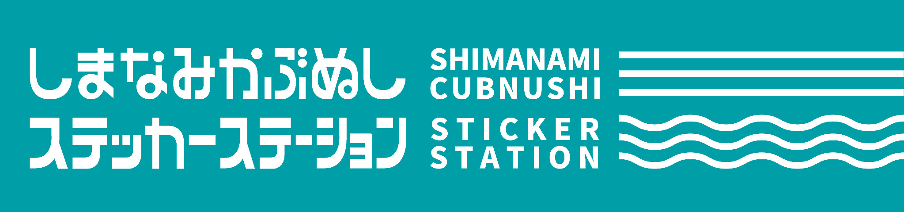
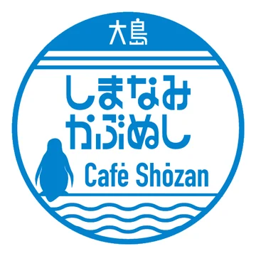
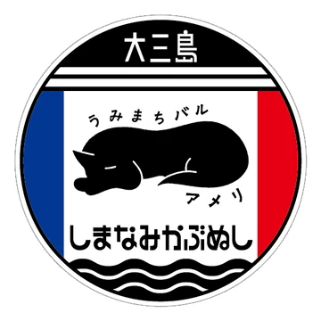
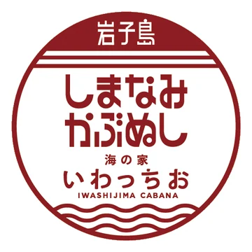
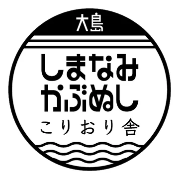
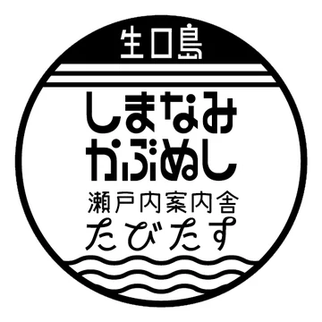
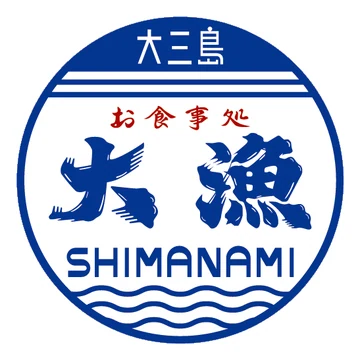
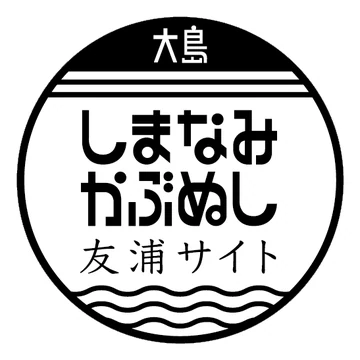
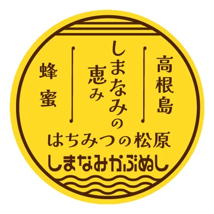
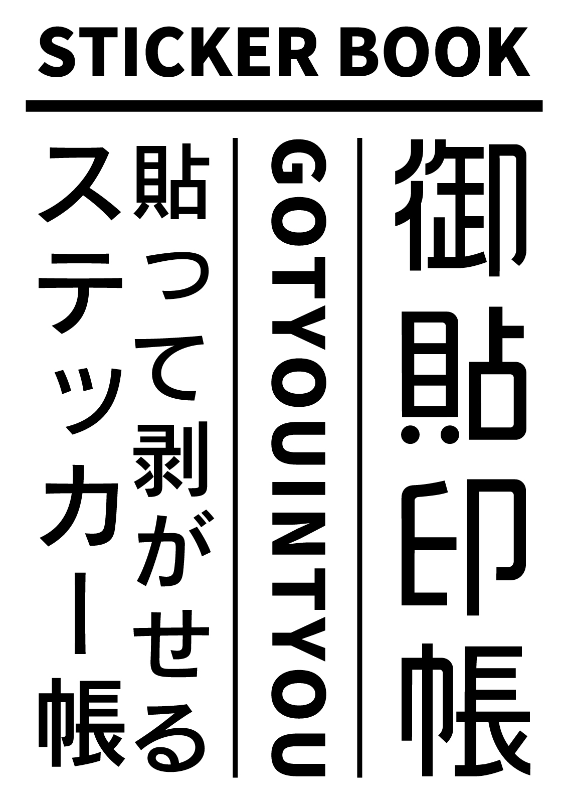

島をめぐって、ステッカーを集めよう。
01 — THE COLLECTION
COLLABORATION STICKERS








20 STATIONS / 28 DESIGNS — 店舗情報は順次更新します。
丸いステッカーをクリックすると、お店の情報が開きます。
2種類あるステッカーは、下の丸を押してデザインを切り替えられます。
※ コラボステッカーの在庫は、各店舗にお問合せください。
02 — FIND YOUR STATION
STATION MAP
参加店舗の場所は、しまなみかぶぬし公式Googleマイマップで確認できます。
Googleマップで大きく見る ↗※ 未登録の店舗・移転準備中の店舗は、所在地が確定してから追加します。
03 — KEEP THE MEMORIES
御貼印帳
しまなみの島々をめぐり、出会ったステッカーを貼っていく。
旅の記録を、自分だけの一冊に。
カブの車体には貼りたくない方も、もう貼る場所がない方も。御朱印を集めるように、訪れた場所のステッカーを一冊に残せる「御貼印帳」を用意しました。
中紙はステッカーを貼ってはがせる剥離紙。旅先で集めたお気に入りを、自分らしくコレクションできます。
御貼印帳の仕様
パスポートサイズ（H124 × W89 × D4mm）
中紙：剥離紙32ページ・無罫
ノート：DESIGNPHIL トラベラーズカンパニー／トラベラーズノートを使用
カバー：designJishacオリジナルデザイン／レーザープリント
販売場所：Jishacギャラリー、またはしまなみかぶぬしミーティング会場にて。

04 — ABOUT THE PROJECT
ABOUT
ステッカーステーションとは？
しまなみ海道界隈の店舗などで、しまなみかぶぬしオリジナルステッカーや、各店舗オリジナルの「しまなみかぶぬしコラボステッカー」を製作・販売している場所です。
コラボステッカーとは？
しまなみ海道界隈の店舗 × しまなみかぶぬしミーティングによる、コラボデザインステッカーです。
カブオーナーの皆さまが店舗に立ち寄るきっかけや、ちょっとした話題づくり、店舗の物販ラインナップの充実などに活用していただけたらという思いから始まったコラボ企画です。
コラボステッカー参加店舗募集中
コラボステッカーは年間を通して参加店舗を募集しています。しまなみ海道沿線をはじめ、周辺地域の店舗様も、ご興味がございましたらお気軽にご連絡ください。
お問い合わせ：しまなみかぶぬしミーティング主催・ゴリ
Instagram @shimacubnushi_gori